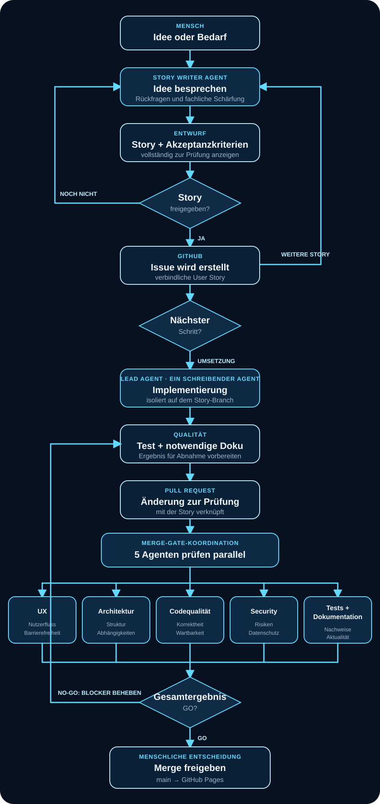

AI-native Product Engineering
Der Prompt ist nur die Spitze.
Ein AI Developer liefert nicht einfach Code. Er muss das Problem verstehen, Anforderungen schärfen, Agents koordinieren und Qualität nachweisen. Deshalb muss ein guter AI Developer auch wie ein Product Owner arbeiten.
DER PROMPT
10 % sichtbar. 90 % Produktverantwortung.
So entsteht eine Änderung
Von der Idee zur Veröffentlichung.
Ein nachvollziehbarer Prozess: Erst wird die Story gemeinsam geschärft, danach folgt die kontrollierte Auslieferung.

Workflow erleben
Szene 1 von 11
AI Coding ist kein Prompt.
Ein Prompt reicht nicht
Animation und Ton starten nach Auswahl von „Animation starten“.
- Story Writer AgentEin Mensch und der spezialisierte Story Writer Agent besprechen die Idee. Entwurf und Akzeptanzkriterien werden so lange geschärft, bis der Mensch „Story freigeben“ sagt.
- GitHub Issue erstellenErst nach der Freigabe wird der Entwurf zur verbindlichen User Story.
- Nächsten Schritt wählenEs können weitere Stories mit dem Story Writer vorbereitet werden – oder die Umsetzung einer freigegebenen Story beginnt.
- Lead Agent implementiertWährend der Umsetzung arbeitet genau ein Agent schreibend auf dem Story-Branch. Danach folgen Test und notwendige Dokumentation.
- Pull Request erstellenDie geprüfte Änderung wird mit der verbindlichen Story verknüpft und zur Abnahme bereitgestellt.
- Fünf Agenten prüfen parallelUX, Architektur, Codequalität, Security sowie Tests und Dokumentation untersuchen den Pull Request unabhängig und gleichzeitig. Ihre Ergebnisse werden zu GO oder NO-GO zusammengeführt.
- Bei NO-GO nachbessernBlockierende Befunde gehen zurück an die Umsetzung. Nach Korrektur und Test läuft das Merge Gate erneut.
- Menschlich freigeben und veröffentlichenNur nach ausdrücklicher Freigabe wird nach
maingemergt; GitHub Pages veröffentlicht daraus die Seite.
Tote Genies
Sie hätten bestimmt noch einen Kommentar.
Fiktive Zitate über die Zusammenarbeit mit Agents.
Alle Zitate sind fiktiv und als humorvolle Hommage gemeint.